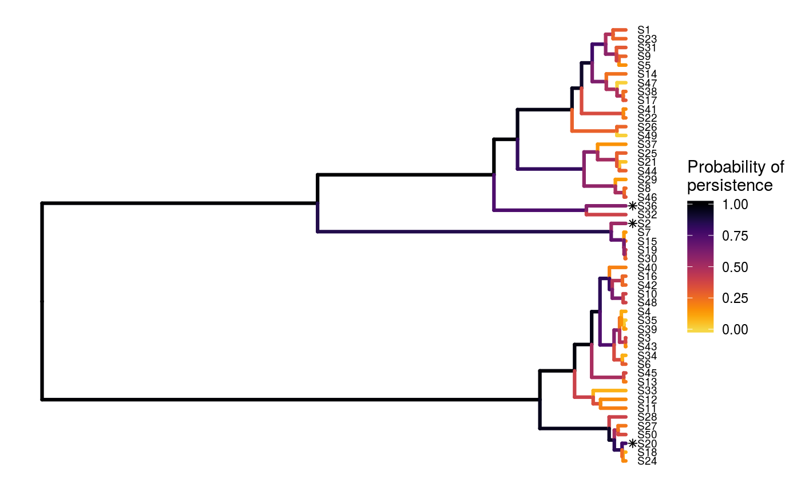
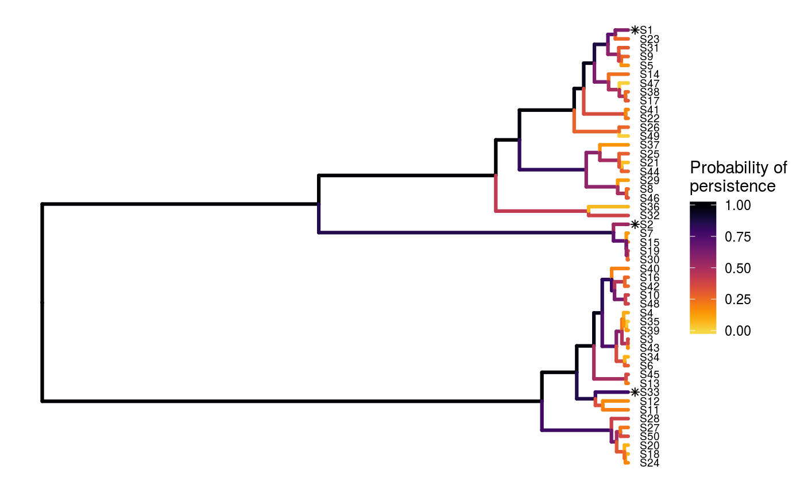
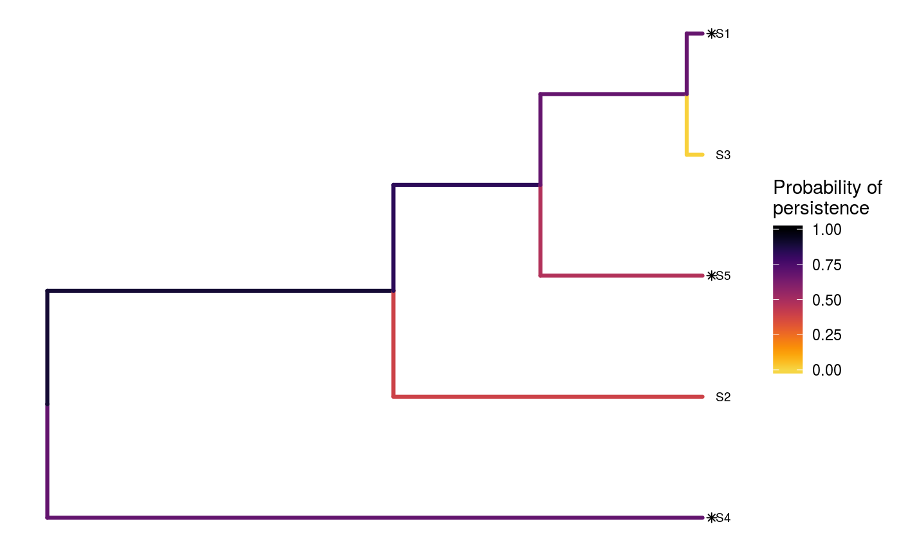

Solve the 'Project Prioritization Protocol' problem using exact algorithms
Source:R/ppp_exact_solution.R
ppp_exact_solution.RdPrioritize funding for conservation projects using exact algorithms. Unlike other methods for generating prioritizations, this method can identify solutions that are guaranteed to be optimal (or within a pre-specified optimality gap; see Underhill 1994; Rodrigues & Gaston 2002). As a consequence, it is strongly recommended to use this method for developing project prioritizations.
ppp_exact_solution(x, tree, budget, project_column_name, cost_column_name, success_column_name, locked_in_column_name = NULL, locked_out_column_name = NULL, gap = 1e-06, threads = 1L, number_solutions = 1L, time_limit = .Machine$integer.max, number_approx_points = 300, verbose = FALSE)
Arguments
| x |
|
|---|---|
| tree |
|
| budget |
|
| project_column_name |
|
| cost_column_name |
|
| success_column_name |
|
| locked_in_column_name |
|
| locked_out_column_name |
|
| gap |
|
| threads |
|
| number_solutions |
|
| time_limit |
|
| number_approx_points |
|
| verbose |
|
Value
A tibble object containing the
solution(s) data. Each row corresponds to a different solution, and
each column describes a different property of the solution. The object
contains a column for each project (based on the argument to
project_column_name) which contains logical values indicating
if the project was prioritized for funded (TRUE) or not
(FALSE) in a given solution. Additionally, the object also contains
the following columns:
"objective"numericobjective value associated with each of the solution(s). This corresponds to the expected amount of evolutionary history that is retained by each solution (Faith 2008)."budget"numericbudget used for generating each of the of the solution(s)."cost"numerictotal cost associated with each of of the solution(s)."optimal"logicalindicating if each of the solution(s) is known to be optimal (TRUE) or not (FALSE. Missing values (NA) indicate that optimality is unknown (i.e. because the method used to produce the solution(s) does not provide any bounds on their quality)."method"charactername of method used to produce the solution(s).)
Details
This function works by formulating the 'Project Prioritization Protocol' as a mixed integer programming problem (MIP) and solving it using the Gurobi optimization software suite. Specifically, the problem aims to maximize the amount of evolutionary history that is expected to persist (i.e. the 'expected phylogenetic diversity' metric; Faith 2008). This is achieved by funding different conservation projects, with known costs, that have a known effect on species' survival. Please refer to the package vignette for the complete formulation of this problem.
Although Gurobi is a commercial software, academics can obtain a special license for no cost. After downloading and installing the hrefhttps://www.gurobi.comGurobi software suite, the gurobi package will also need to be installed (see instructions for Linux, Mac OSX, and Windows operating systems). Finally, the gurobi package will also need to be installed (see instructions for Linux, Mac OSX, and Windows operating systems).
References
Faith DP (2008) Threatened species and the potential loss of phylogenetic diversity: conservation scenarios based on estimated extinction probabilities and phylogenetic risk analysis. Conservation Biology, 22: 1461--1470.
Rodrigues AS & Gaston KJ (2002) Optimisation in reserve selection procedures---why not? Biological Conservation, 107: 123-129.
Underhill LG (1994) Optimal and suboptimal reserve selection algorithms. Biological Conservation, 70: 85--87.
See also
For other methods for solving the 'Project Prioritization Protocol'
problem, see ppp_heuristic_solution,
ppp_manual_solution, and ppp_random_solution.
To visualize the effectiveness of a particular solution, see
ppp_plot.
Examples
# load built-in data data(sim_project_data, sim_tree) # print simulated project data set print(sim_project_data)#> # A tibble: 6 x 10 #> name cost success locked_in locked_out S1 S2 S3 S4 S5 #> <chr> <dbl> <dbl> <lgl> <lgl> <dbl> <dbl> <dbl> <dbl> <dbl> #> 1 S1_project 94.4 0.847 FALSE FALSE 0.802 0 0 0 0 #> 2 S2_project 101. 0.969 FALSE FALSE 0 0.808 0 0 0 #> 3 S3_project 103. 0.732 FALSE TRUE 0 0 0.678 0 0 #> 4 S4_project 99.2 0.979 FALSE FALSE 0 0 0 0.703 0 #> 5 S5_project 99.9 0.714 TRUE FALSE 0 0 0 0 0.657 #> 6 baseline_p… 0 1 FALSE FALSE 0.293 0.388 0.0120 0.195 0.124# print simulated phylogenetic tree data set print(sim_tree)#> #> Phylogenetic tree with 5 tips and 4 internal nodes. #> #> Tip labels: #> [1] "S3" "S1" "S5" "S2" "S4" #> #> Rooted; includes branch lengths.# plot the simulated phylogeny plot(sim_tree, main = "simulated phylogeny")# verify if guorbi package is installed if (!require(gurobi, quietly = TRUE)) stop("the gurobi R package is not installed.") # find a solution that meets a budget of 300 s1 <- ppp_exact_solution(sim_project_data, sim_tree, 300, "name", "cost", "success") # print solution print(s1)#> # A tibble: 1 x 12 #> solution objective budget cost optimal method S1_project S2_project #> <int> <dbl> <dbl> <dbl> <lgl> <chr> <lgl> <lgl> #> 1 1 3.49 300 295. TRUE exact TRUE TRUE #> # ... with 4 more variables: S3_project <lgl>, S4_project <lgl>, #> # S5_project <lgl>, baseline_project <lgl># print the names of which projects were funded print(names(s1)[which(unlist(s1[1, sim_project_data$name]))])#> [1] "solution" "objective" "cost" "method"# find a solution that meets a budget of 300 and allocates # funding for the "S1_project" project. For instance, species "S1" might # be an iconic species that has cultural and economic importance. sim_project_data2 <- sim_project_data sim_project_data2$locked_in <- sim_project_data2$name == "S1_project" s2 <- ppp_exact_solution(sim_project_data2, sim_tree, 300, "name", "cost", "success", locked_in_column_name = "locked_in") # print solution print(s2)#> # A tibble: 1 x 12 #> solution objective budget cost optimal method S1_project S2_project #> <int> <dbl> <dbl> <dbl> <lgl> <chr> <lgl> <lgl> #> 1 1 3.49 300 295. TRUE exact TRUE TRUE #> # ... with 4 more variables: S3_project <lgl>, S4_project <lgl>, #> # S5_project <lgl>, baseline_project <lgl># find a solution that meets a budget of 300 and does not allocate # funding for the "S2_project" project. For instance, species "S2" # might have very little cultural or economic importance. Broadly speaking, # though, it is better to "lock in" "important" species rather than # "lock out" unimportant species. sim_project_data3 <- sim_project_data sim_project_data3$locked_out <- sim_project_data2$name == "S2_project" s3 <- ppp_exact_solution(sim_project_data3, sim_tree, 300, "name", "cost", "success", locked_out_column_name = "locked_out") # print solution print(s3)#> # A tibble: 1 x 12 #> solution objective budget cost optimal method S1_project S2_project #> <int> <dbl> <dbl> <dbl> <lgl> <chr> <lgl> <lgl> #> 1 1 3.31 300 294. TRUE exact TRUE FALSE #> # ... with 4 more variables: S3_project <lgl>, S4_project <lgl>, #> # S5_project <lgl>, baseline_project <lgl>